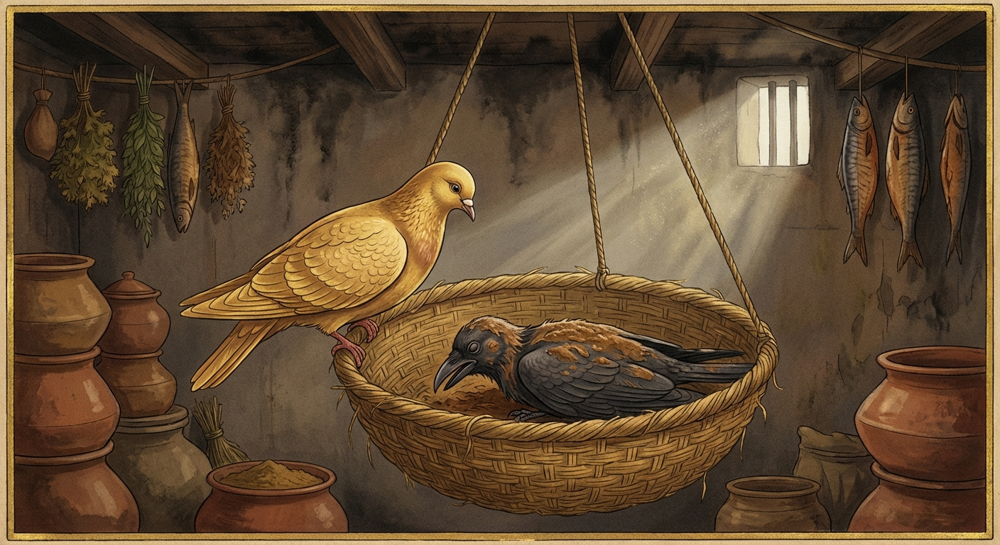

2. කපෝත ජාතකය (42)
“යො අත්ථකාමස්සා” යන මේ ගාථාව ශාස්තෘන් වහන්සේ ජේතවනයේ වැඩ වසන සමයෙහි එක්තරා කෑදර භික්ෂුවක් අරබයා දේශනා කළ සේක. ඒ භික්ෂුවගේ කෑදරකම නවවැනි නිපාතයේ කාක ජාතකයේ මතු හෙළි වන්නේය. එකල්හි භික්ෂූන් වහන්සේලා, “ස්වාමීනි, මේ භික්ෂුව කෑදරය” යැයි බුදුරජාණන් වහන්සේට දැන්වූහ. එවිට බුදුරජාණන් වහන්සේ, “මහණ, ඔබ කෑදරය යනු සත්යදැ”යි විචාළ සේක. “එසේය, ස්වාමීනි” යැයි ඔහු පිළිතුරු දුන්නේය. ශාස්තෘන් වහන්සේ, “මහණ, පෙරත් ඔබ කෑදර වූයෙහිය. කෑදරකම නිසා ජීවිතක්ෂයට පත්වූයෙහිය. නුවණැත්තෝ ද ඔබ නිසා තම වාසස්ථානවලින් පිරිහුණාහ” යැයි වදාරා අතීත කතාව ගෙනහැර දැක්වූ සේක.
අතීතයේ බරණැස් නුවර බ්රහ්මදත්ත රජු රාජ්ය කරන සමයෙහි බෝධිසත්වයෝ පරෙවි යෝනියෙහි උපන්හ. එකල බරණැස් වැසියෝ පින් කැමතිව ඒ ඒ ස්ථානවල කුරුල්ලන්ට සැප සේ වාසය කිරීම පිණිස පිදුරු කූඩ (පැස්) එල්ලති. බරණැස් සිටුතුමාගේ අරක්කැමියා ද තම මුළුතැන්ගෙයි එක් පිදුරු කූඩයක් එල්ලා තැබීය. බෝධිසත්වයෝ එහි වාසය කළහ. උන්වහන්සේ උදෑසනම නික්මී ගොදුරු සොයා ගොස් සවස අවුත් එහි වසමින් කාලය ගත කළහ. ඉක්බිති එක් දිනක් එක් කපුටෙක් මුළුතැන්ගෙය මත්තෙන් පියාසර කරන විට මත්ස්ය මාංශ පිසින සුවඳ ආඝ්රාණය කොට, කෑදරකම උපදවා, “කා නිසා නම් මේ මත්ස්ය මාංශ ලබන්නෙම් ද” යි සිතා නුදුරෙහි හිඳ පරීක්ෂා කළේය. සවස බෝධිසත්වයන් අවුත් මුළුතැන්ගෙට පිවිසෙනු දැක, “මේ පරෙවියා මාර්ගයෙන් මත්ස්ය මාංශ ලබා ගන්නෙමි” යි සිතා පසුදින උදෑසනම අවුත්, බෝධිසත්වයන් නික්මී ගොදුරු සොයා යන විට පිටුපසින් ගියේය. එවිට බෝධිසත්වයෝ, “මිත්රය, ඔබ කුමක් නිසා අප සමඟ හැසිරෙන්නෙහිදැ” යි ඇසූහ. “ස්වාමීනි, ඔබ වහන්සේගේ ක්රියාව මට රුචි කෙරේ. මෙතැන් පටන් ඔබට උපස්ථාන කරන්නෙමි” යි කීවේය. “මිත්රය, ඔබ අන්ය ගොදුරු ඇත්තෙකි. අපි අන්ය ගොදුරු ඇත්තෙමු. ඔබ විසින් අපට උපස්ථාන කිරීම දුෂ්කරය” යි බෝසත්හු කීහ. “ස්වාමීනි, ඔබ වහන්සේ ගොදුරු සොයන කල මමත් ගොදුරු සොයාගෙන ඔබ වහන්සේ සමඟම යන්නෙමි” යි කීවේය. “යහපත, හුදෙක් ඔබ අප්රමාදී විය යුතුය” යි මෙසේ බෝධිසත්වයෝ කපුටාට අවවාද කොට ගොදුරු බිමේ හැසිරෙමින් තණ ඇට ආදිය කති. බෝධිසත්වයන් ගොදුරු සොයන අතරතුර කපුටා ගොස් ගොම පිඬක් පෙරළා පණුවන් කා කුස පුරවාගෙන බෝධිසත්වයන් වෙත පැමිණ, “ස්වාමීනි, ඔබ වහන්සේ වැඩි වේලාවක් ගොදුරු සොයති. පමණ ඉක්මවා ආහාර ගැනීම සුදුසු නැතැ” යි කියා, බෝධිසත්වයන් ගොදුරු ගෙන සවස එන විට ඔවුන් සමඟම මුළුතැන්ගෙට පිවිසියේය. අරක්කැමියා, “අපේ පරෙවියා තවත් අයෙකු කැටුව පැමිණියේය” යි සිතා කපුටාට ද කූඩයක් තැබීය. එතැන් පටන් දෙදෙනාම එහි වාසය කළහ.
ඉක්බිති එක් දිනක සිටුතුමාට බොහෝ මස් මාළු ලැබුණේය. අරක්කැමියා ඒවා ගෙන ඒ ඒ තැන එල්ලීය. කපුටා ඒවා දැක කෑදරකම උපදවා, “හෙට ගොදුරු බිමට නොගොස් මා විසින් මෙය කෑ යුතුය” යි සිතා, රාත්රියෙහි කෙඳිරිගාමින් වැතිර සිටියේය. පසුදින බෝධිසත්වයෝ ගොදුරු සොයා යනු පිණිස, “එව, මිත්ර කපුට” යැයි කීහ. “ස්වාමීනි, ඔබ වහන්සේ යන්න, මට බඩේ රෝගයක් ඇතැ” යි කීවේය. “මිත්රය, කපුටන්ට බඩේ රෝග ඇති බවක් කිසිදා අසා නැත. රාත්රියේ යාම තුනෙහි එක් එක් යාමයේ මොහොතක් මුසපත් වීම ඔවුන්ට සිදු වෙයි. පහන් වැටියක් ගිල දැමූ විට ඔවුනට මොහොතක තෘප්තියක් ලැබෙයි. ඔබ මේ මස් මාළු කෑමට කැමැත්තෙන් සිටින්නෙහි විය යුතුය. එව, මිනිසුන් පරිභෝජනය කරන දේ ඔබට දිරවීමට අපහසුය. මෙබඳු දෙයක් නොකරන්න. මා සමඟම ගොදුරු සොයා යමු” යි කීහ. “ස්වාමීනි, මට නොහැකිය” යි කීය. “එසේ නම් ඔබේ ක්රියාවෙන් පල විපාක ඔබටම දැනෙනු ඇත. ලෝභයට වසඟ නොවී අප්රමාදී වන්න” යි ඔහුට අවවාද කොට බෝධිසත්වයෝ ගොදුරු සොයා ගියහ.
අරක්කැමියා නොයෙක් අයුරින් මස් මාළු පිළියෙල කොට, වාෂ්ප පිටවීම පිණිස බඳුන් මදක් විවර කොට, රස පෙරන බඳුනක් (පෙරහනක්) ඒ මත තබා පිටතට ගොස් දහඩිය පිස දමමින් සිටියේය. එකෙණෙහි කපුටා කූඩයෙන් හිස ඔසවා මුළුතැන්ගෙය දෙස බලා ඔහු පිටතට ගිය බව දැන, “දැන් මගේ මනදොළ පුරවාගෙන මස් කෑමට කාලයයි. කුමක්ද? ලොකු මස් කැබැල්ලක් කන්නෙම් ද? නැතහොත් මස් වැදැල්ලක් කන්නෙම් ද?” යි සිතා, “කුඩා මස් කැබලිවලින් කුස පුරවා ගැනීම අපහසුය. ලොකු මස් කැබැල්ලක් ගෙන කූඩයේ තබාගෙන කමින් වැතිර සිටින්නෙමි” යි සිතා කූඩයෙන් ඉගිලී ගොස් පෙරහන මත වසාලීය. එය ‘කිරි’ යනුවෙන් ශබ්ද නැගීය. අරක්කැමියා ඒ ශබ්දය අසා, “මේ කුමක්දැ” යි ඇතුළට පැමිණ කපුටා දැක, “මේ දුෂ්ට කපුටා සිටුතුමාට පිසූ මස් කෑමට සැරසෙයි. මම ජීවත් වන්නේ සිටුතුමා නිසා මිස මේ මෝඩයා නිසා නොවේ. මූගෙන් මට ඇති වැඩේ කුමක්ද?” යි සිතා දොර වසා කපුටා අල්ලාගෙන, මුළු ශරීරයේ පිහාටු ගලවා, අමු ඉඟුරු, ලුණු හා දුරු එක්කොට කොටා, ඇඹුල් මෝරු සමඟ කලතා, එයින් කපුටාගේ මුළු සිරුර තවරා එම කූඩයටම දැම්මේය. ඒ කපුටා දැඩි වේදනාවෙන් පීඩිතව කෙඳිරිගාමින් වැතිර සිටියේය.
බෝධිසත්වයෝ සවස පැමිණ ව්යසනයට පත් කපුටා දැක, “කෑදර කපුට, මගේ වචනය නොසලකා ඔබේ කෑදරකම නිසා මහත් දුකකට පත් වූයෙහි ය” යි පවසා මේ ගාථාව වදාළහ.
“යමෙක් තමාගේ අභිවෘද්ධිය කැමති, හිතවත්, අනුකම්පා සහගත උතුමන් විසින් අවවාද කරනු ලබන විට ඒ කියමන නොකරයි ද, හෙතෙම පරෙවියාගේ වචනය නො අසා විනාශ වූ කපුටා මෙන් සතුරන් අතට පත්ව ශෝක කරයි.”
එහි කපොතකස්ස වචනං අකත්වා යනු පරෙවියාගේ හිතවත් අවවාද වචනය නොපිළිගෙන යන්නයි. අමිත්තහත්ථත්ථගතොව සෙතී යනු අමිත්ර වූ, අනර්ථ කරන්නා වූ, දුක් උපදවන පුද්ගලයන්ගේ අතට (වසඟයට) පත් වූවෙකු මෙන්, මේ කපුටා සේ මහත් ව්යසනයට පැමිණ ශෝක කරමින් වැතිර සිටී යන්නයි.
බෝධිසත්වයෝ මේ ගාථාව පවසා, “දැන් මට ද මෙතැන විසිය නොහැකිය” යි තීරණය කොට වෙනත් තැනකට ගියහ. කපුටා ද එහිම මරණයට පත් විය. ඉක්බිති අරක්කැමියා කපුටා කූඩයත් සමඟම ගෙන ගොස් කසළ ගොඩට දැම්මේය.

බුදුරජාණන් වහන්සේ ද, “මහණ, ඔබ දැන් පමණක් නොව පෙරත් කෑදර වූයෙහිය. ඔබේ ඒ කෑදරකම නිසා නුවණැත්තෝ ද තම වාසස්ථානවලින් පිරිහුණාහ” යි මේ ධර්ම දේශනාව ගෙනහැර දක්වා චතුරාර්ය සත්යය ප්රකාශ කළ සේක. සත්ය දේශනාව අවසානයේ ඒ භික්ෂුව අනාගාමී ඵලයට පත් විය. ශාස්තෘන් වහන්සේ පූර්වාපර සන්ධි ගළපා ජාතකය සමාප්ත කළ සේක: “එකල කපුටා නම් මේ කෑදර භික්ෂුවය. පරෙවියා නම් මම ම වෙමි.”
දෙවැනි වූ කපෝත ජාතක වර්ණනාවයි.